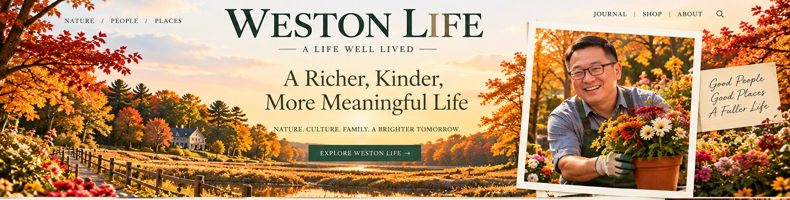
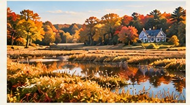
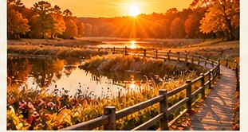
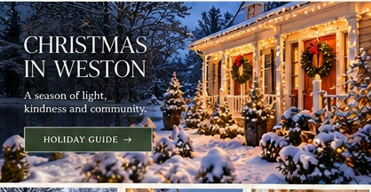

Morning in the Wetlands
Golden reeds, reflective water, and a gentler start to the day.
Share a story → 01 · TOP STORY特朗普推动大规模人工智能建设，选民对此持谨慎态度Trump is pushing a massive AI buildout. His own voters are wary of what comes with itCNBC · 2026-10-24
01 · TOP STORY特朗普推动大规模人工智能建设，选民对此持谨慎态度Trump is pushing a massive AI buildout. His own voters are wary of what comes with itCNBC · 2026-10-24 02 · TOP STORY英伟达作为人工智能融资者的角色面临首次重大考验Nvidia's role as AI financier faces first big test as neoclouds take market hitCNBC · 2026-10-24
02 · TOP STORY英伟达作为人工智能融资者的角色面临首次重大考验Nvidia's role as AI financier faces first big test as neoclouds take market hitCNBC · 2026-10-24 03 · TOP STORY美国出生率降至历史低点，但年长女性生育更多U.S. birth rate drops to record low, but older women are having more babiesNPR · 2026-10-24
03 · TOP STORY美国出生率降至历史低点，但年长女性生育更多U.S. birth rate drops to record low, but older women are having more babiesNPR · 2026-10-24


Coco Bean’s View Today
观点栏目独立于自动新闻摘要；在本人撰写或确认前，不自动生成署名个人观点。
Personal commentary is published separately from AI-assisted news summaries.
MA各城市最近成交数据、房价、学区与热门住宅类型。数据按原始统计月份显示，不用挂牌价冒充成交价。
数据来源：Redfin Data Center / Massachusetts Association of REALTORS（经 Boston Agent Magazine 报道）。均为中位成交价（median），不是平均成交价（mean）；仅在来源明确提供时显示。
| City 城市 | 成交套数 | 成交价中位数 | $/sq.ft. | 挂牌天数中位数 | 月份 |
|---|---|---|---|---|---|
| Weston ↗ | 39 | $2.27M | $518 | 66 | 2026-09 |
Redfin 批量下载尚未成功；目前仅展示已核实的 Weston 2026年9月数据，其他城市暂不填写。 口径：Redfin All Residential，成交套数为月度实际成交；本栏目不把所列城市中位价简单平均当作整个地区的真实平均总价。查看完整数据与方法 ↗
2027 年 Niche 麻州公立学区排行榜（2026年9月发布）；以下显示前十名及 Newton、Wellesley。排名属于 Niche 的评价，不是官方州教育厅排名。
Boston.com：2027 Niche MA 学区排名（2026-10-23） ↗
公开汇总数据尚不足以判断三卧、四卧哪种最畅销，因此不编造热门卧室数。
数据随 Redfin 月度数据和媒体源更新；各条新闻点击在新标签页打开，不跳转至 Google 新闻搜索页。
Weston High School 官方通知、校园新闻与学生活动 · 每条显示实际发布日期，点击打开原始报道。
Official Weston High School updates and student news, with original publication dates and source links.
Weston High School 官方通知、校园新闻与学生活动 · 每条显示实际发布日期，点击打开原始报道。
Official Weston High School updates and student news, with original publication dates and source links.
Weston High School 官方通知、校园新闻与学生活动 · 每条显示实际发布日期，点击打开原始报道。
Official Weston High School updates and student news, with original publication dates and source links.
据Weston镇2026年学校委员会报告，2025届毕业生中约97%继续升学，就读于96所高等教育机构。以下为部分院校的实际入读人数，非录取通知书数量。
According to the Town's 2026 School Committee report, about 97% of the Class of 2025 continued their education at 96 institutions. Counts below are matriculations, not offers of admission.
查看2025届完整96所院校去向（官方PDF，第29页） ↗
View complete 2025 college list (Town report, p. 29) ↗
资料年份：2025届去向，公布于2026年。注意：2025–26官方高中概况另列170名毕业生；上文采用同一份2026年镇报告的169人及院校明细，不混用口径。学校并非每天公布新升学数据。
The 2025 cohort was reported in the 2026 Town Report. A separate WHS profile lists 170 graduates; this feature consistently uses the town report's count of 169. Admissions outcomes do not change daily.
WESTON LIFE · COMMUNITY STORIES
白山、Stowe还是Wyman Lake？新英格兰枫叶到底哪里最美？
Weston 旅游专家：跋涉山水
阅读完整游记 · Read the Story →
Weston Life celebrates the people, places and pursuits that make life richer — from quiet mornings in the wetlands to beautiful homes, generous neighbors, and the simple joys that bring us together.
Explore Weston Life →从波士顿到世界 · 中英文新闻与可可豆子的今日观点
Boston, Massachusetts & the World · Bilingual News and Commentary
阅读今天的新闻 / Read Today's Edition →
A place defined not by noise, but by the rhythm of changing leaves, quiet trails, open skies and beautiful corners worth preserving.
Golden reeds, reflective water, and a gentler start to the day.
Share a story →Stone walls and long-standing lanes connect Weston's past to its present.
Get in touch →
Rooms made for conversation, gardens tended with care, and small traditions that turn a house into a life.
Life feels fuller when we grow something, make something, or share something — with family, friends and the community around us.
Real neighbors and the small acts of care that help a community bloom.
Share your garden →Autumn arrangements, shared meals and the art of making everyday life special.
Share a tradition →Outdoor pursuits, patience, craft, and stories that stay with us.
Submit your story →Pumpkins at the doorstep, flowers in the garden, crisp morning walks and a countryside painted in amber and gold.
Pick the season's brightest pumpkins and bring a little autumn home.
Your harvest story →Chrysanthemums and colorful flowerbeds shine in the soft October light.
Share a photo →Take the scenic route past old stone walls and brilliant turning leaves.
Favorite walk →Not just a holiday meal — a chance to come together, celebrate the year's small gifts, and make memories across generations.
Warm candlelight, good food and the comfort of being together.
Send a recipe →A fire, a familiar room, a four-legged friend, and time spent together.
Tell your story →As snow settles and windows glow, the spirit of the season is found in the quiet beauty of neighborhood traditions and acts of kindness.

Neighborhood markets, conversations and reasons to step outside.
Suggest a gathering →Beautiful small gestures and meaningful traditions to carry forward.
Share a tradition →Weston is more than scenery. It is a living community — shaped by the care, creativity and generosity of the people who call it home.
Thoughtful homes, respect for the land, and an appreciation for beauty.
Join the conversation →“Good People. Good Places.
A Fuller Life.”
For neighborhood stories, seasonal photos, collaborations and community ideas:
2026-10-24 · 每日新闻 / Daily News ↗
2026-10-23 · 每日新闻 / Daily News ↗
2026-10-22 · 每日新闻 / Daily News ↗
2026-10-21 · 每日新闻 / Daily News ↗
2026-10-20 · 每日新闻 / Daily News ↗
Past Editions · 往期新闻
2026年10月19日 · 今日十大新闻 →